Reference counting
One basic anaylisis we want to perform is to count the abundance of some references in our data. Here reference is a broad term and may refer to transcripts, genomes, or amplicon sequences contained in a reference database.
For this miso implements a general purpose expectation
maximization (EM) counter. It is implemented in C++ to perform fast and
usually reading the alignment file takes longer than the actual
analysis.
## Also loading:## - dada2=1.28.0
## - data.table=1.15.2
## - ggplot2=3.5.0
## - magrittr=2.0.3
## - phyloseq=1.44.0
## - ShortRead=1.58.0
## - yaml=2.3.8## Found tools:## - minimap2=2.27-r1193
## - samtools=1.19.2##
## Attaching package: 'miso'## The following object is masked _by_ 'package:BiocGenerics':
##
## normalize## The following object is masked from 'package:graphics':
##
## layoutAlignment
Let’s start by aligning our short read data to a reference database of 10 microbial genomes.
alns <- system.file("extdata/aln", package = "miso") %>%
find_alignments()
ref <- system.file("extdata/genomes/zymo_mock.fna.gz",
package = "miso")EM counting
Counting is yet again a workflow and requires an alignment artifact and a configuration.
config <- config_count(
reference = ref,
threads = 1,
weights = TRUE
)
config## $reference
## [1] "/tmp/RtmpFnpEcH/temp_libpath39b6c5ce98287/miso/extdata/genomes/zymo_mock.fna.gz"
##
## $threads
## [1] 1
##
## $method
## [1] "em"
##
## $maxit
## [1] 10000
##
## $cutoff
## [1] 0.01
##
## $tpm
## [1] FALSE
##
## $weights
## [1] TRUE
##
## attr(,"class")
## [1] "config"And we can proceed to counting:
cn <- count_references(alns, config)## INFO [2024-04-29 09:43:56] Getting reference lengths from /tmp/RtmpFnpEcH/temp_libpath39b6c5ce98287/miso/extdata/genomes/zymo_mock.fna.gz...
## INFO [2024-04-29 09:43:56] Normalized IDs. Starting counting...
## INFO [2024-04-29 09:43:56] [/tmp/RtmpFnpEcH/temp_libpath39b6c5ce98287/miso/extdata/aln/even1.bam] Read 16943 alignments.
## INFO [2024-04-29 09:43:56] [/tmp/RtmpFnpEcH/temp_libpath39b6c5ce98287/miso/extdata/aln/even1.bam] 10 reference seqs. Confidence interval for effective lengths: [2261189.10, 17482265.90].
## INFO [2024-04-29 09:43:56] [/tmp/RtmpFnpEcH/temp_libpath39b6c5ce98287/miso/extdata/aln/even1.bam] Used 20 EM iterations on 16 equivalence classes. Last max. abs. change was 1.1e-13. Database concordance is 99.84%.
## INFO [2024-04-29 09:43:56] [/tmp/RtmpFnpEcH/temp_libpath39b6c5ce98287/miso/extdata/aln/even2.bam] Read 16803 alignments.
## INFO [2024-04-29 09:43:56] [/tmp/RtmpFnpEcH/temp_libpath39b6c5ce98287/miso/extdata/aln/even2.bam] 10 reference seqs. Confidence interval for effective lengths: [2261189.10, 17482265.90].
## INFO [2024-04-29 09:43:56] [/tmp/RtmpFnpEcH/temp_libpath39b6c5ce98287/miso/extdata/aln/even2.bam] Used 20 EM iterations on 12 equivalence classes. Last max. abs. change was 2.3e-13. Database concordance is 99.83%.
## INFO [2024-04-29 09:43:56] [/tmp/RtmpFnpEcH/temp_libpath39b6c5ce98287/miso/extdata/aln/even3.bam] Read 17517 alignments.
## INFO [2024-04-29 09:43:57] [/tmp/RtmpFnpEcH/temp_libpath39b6c5ce98287/miso/extdata/aln/even3.bam] 10 reference seqs. Confidence interval for effective lengths: [2261189.10, 17482265.90].
## INFO [2024-04-29 09:43:57] [/tmp/RtmpFnpEcH/temp_libpath39b6c5ce98287/miso/extdata/aln/even3.bam] Used 20 EM iterations on 20 equivalence classes. Last max. abs. change was 2.3e-13. Database concordance is 99.84%.This creates a count artifact which contains the counts.
cn$counts## reference counts effective_length sample
## <char> <num> <num> <char>
## 1: AE004091.2 633.55872 6264306 even1
## 2: AE006468.2 670.36751 4857352 even1
## 3: AE016830.1 660.11661 3217933 even1
## 4: AE017341.1 603.13777 19052864 even1
## 5: AL009126.3 627.86614 4215508 even1
## 6: AL591824.1 627.88684 2944430 even1
## 7: AP008937.1 463.49491 2098587 even1
## 8: BA000007.3 701.72676 5498480 even1
## 9: BK006935.2 583.40000 12072428 even1
## 10: CP000253.1 717.15854 2821263 even1
## 11: <NA> 10.28620 NA even1
## 12: AE004091.2 637.96413 6264306 even2
## 13: AE006468.2 546.16769 4857352 even2
## 14: AE016830.1 684.69335 3217933 even2
## 15: AE017341.1 588.45604 19052864 even2
## 16: AL009126.3 587.77636 4215508 even2
## 17: AL591824.1 510.05621 2944430 even2
## 18: AP008937.1 670.60797 2098587 even2
## 19: BA000007.3 630.95856 5498480 even2
## 20: BK006935.2 608.11643 12072428 even2
## 21: CP000253.1 590.10050 2821263 even2
## 22: <NA> 10.10276 NA even2
## 23: AE004091.2 616.09439 6264306 even3
## 24: AE006468.2 653.06348 4857352 even3
## 25: AE016830.1 600.05374 3217933 even3
## 26: AE017341.1 638.01088 19052864 even3
## 27: AL009126.3 556.39173 4215508 even3
## 28: AL591824.1 718.93137 2944430 even3
## 29: AP008937.1 731.04016 2098587 even3
## 30: BA000007.3 553.07477 5498480 even3
## 31: BK006935.2 610.69845 12072428 even3
## 32: CP000253.1 485.63165 2821263 even3
## 33: <NA> 10.00938 NA even3
## reference counts effective_length sampleNote that there is a NA reference. This is the number of reads likely coming from a sequence not contained in the reference.
cn$counts[is.na(reference)]## reference counts effective_length sample
## <char> <num> <num> <char>
## 1: <NA> 10.28620 NA even1
## 2: <NA> 10.10276 NA even2
## 3: <NA> 10.00938 NA even3In each sample we have 10 microbes with the same abundance.
ggplot(cn$counts, aes(x=counts, y=reference)) +
geom_point() + xlim(0, 1000) +
facet_wrap(~ sample) + theme_minimal()
Looks ok, but there is a lot of noise since we have very low depth.
ggplot(cn$counts, aes(x = counts)) + geom_histogram(bins = 8)We could also compare that with a naive counting method that just uses the best alignment score. In our case that will perform equally since we have little multi-mapping here.
config$method <- "naive"
cn2 <- count_references(alns, config)## INFO [2024-04-29 09:43:57] Getting reference lengths from /tmp/RtmpFnpEcH/temp_libpath39b6c5ce98287/miso/extdata/genomes/zymo_mock.fna.gz...
## INFO [2024-04-29 09:43:57] Normalized IDs. Starting counting...
## INFO [2024-04-29 09:43:57] [/tmp/RtmpFnpEcH/temp_libpath39b6c5ce98287/miso/extdata/aln/even1.bam] Read 16943 alignments.
## INFO [2024-04-29 09:43:57] [/tmp/RtmpFnpEcH/temp_libpath39b6c5ce98287/miso/extdata/aln/even1.bam] 10 reference seqs. Confidence interval for effective lengths: [2261189.10, 17482265.90].
## INFO [2024-04-29 09:43:57] [/tmp/RtmpFnpEcH/temp_libpath39b6c5ce98287/miso/extdata/aln/even2.bam] Read 16803 alignments.
## INFO [2024-04-29 09:43:57] [/tmp/RtmpFnpEcH/temp_libpath39b6c5ce98287/miso/extdata/aln/even2.bam] 10 reference seqs. Confidence interval for effective lengths: [2261189.10, 17482265.90].
## INFO [2024-04-29 09:43:57] [/tmp/RtmpFnpEcH/temp_libpath39b6c5ce98287/miso/extdata/aln/even3.bam] Read 17517 alignments.
## INFO [2024-04-29 09:43:57] [/tmp/RtmpFnpEcH/temp_libpath39b6c5ce98287/miso/extdata/aln/even3.bam] 10 reference seqs. Confidence interval for effective lengths: [2261189.10, 17482265.90].
counts <- cn$counts[cn2$counts, on = c("sample", "reference", "effective_length")]
ggplot(counts, aes(x = counts, y = i.counts)) +
geom_point() + geom_smooth(method = "lm") +
labs(x = "em", y = "naive") + theme_classic()## `geom_smooth()` using formula = 'y ~ x'
As we see they both give the same results for that simple case.